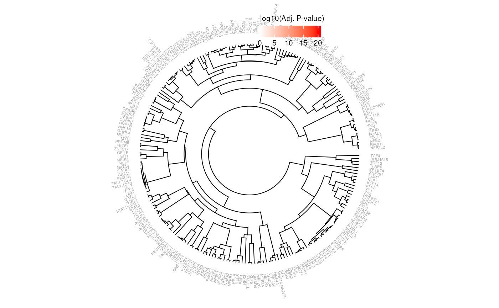

Generates a cladogram clustered by SNP Effect Matrix similarity and a heatmap representing the adjusted p-value of the enrichment.
Arguments
- e
The resulting data.table from
enrichSEMs- sem
A
SNPEffectMatrixCollectionobject- label
Column in semData(sem) to use for tree labels
- method
Method to use for SEM comparison. See ?universalmotif::compare_motifs for options.
- threshold
The adjusted p-value threshold for coloring SEMs
- textCols
A vector of two colors to label non-significant and significant SEMs respectively.
- textCex
Text size of SEM labels.
- heatmapCols
A vector of two colors to use for the heatmap, ordered low to high -log10(padj).
Examples
# load SEMs
data(SEMC)
# note that this is a small example for demonstration purposes
# in actual enrichment analyses sets of 100+ ranges are recommended
# create a GRanges object
gr <- GenomicRanges::GRanges(
seqnames = "chr12",
ranges = 94136009
)
# calculate binding propensity
sb <- scoreBinding(gr, SEMC, BSgenome.Hsapiens.UCSC.hg19::Hsapiens)
e <- enrichSEMs(sb, SEMC)
plotEnrich(e, SEMC)
